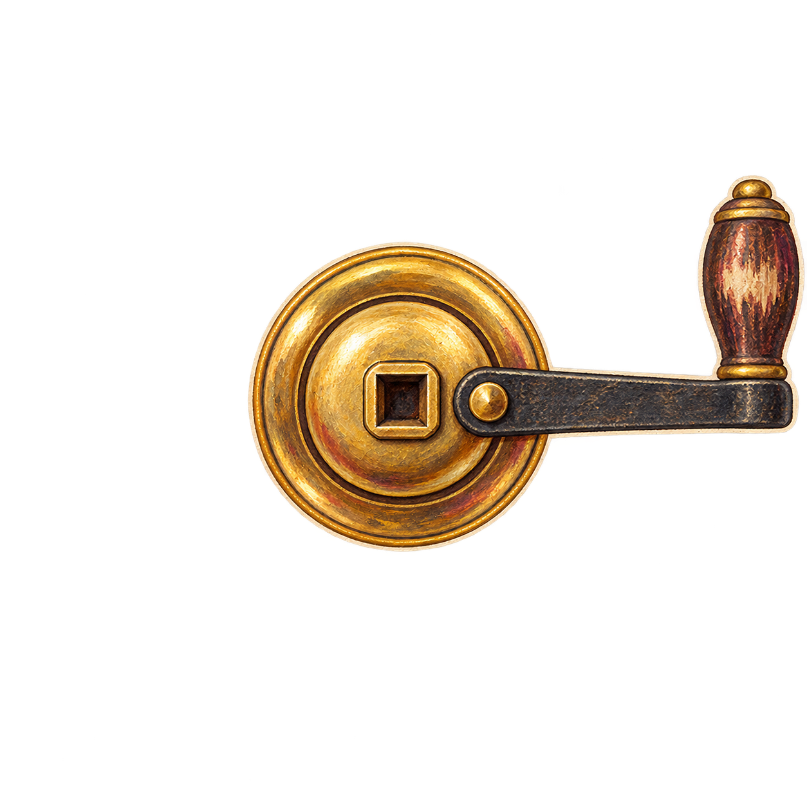Second round: stage machinery, footlights and the HUDWave-row crank handlewave-crank200 × 200 · centre (axle hub)Game copy · Original
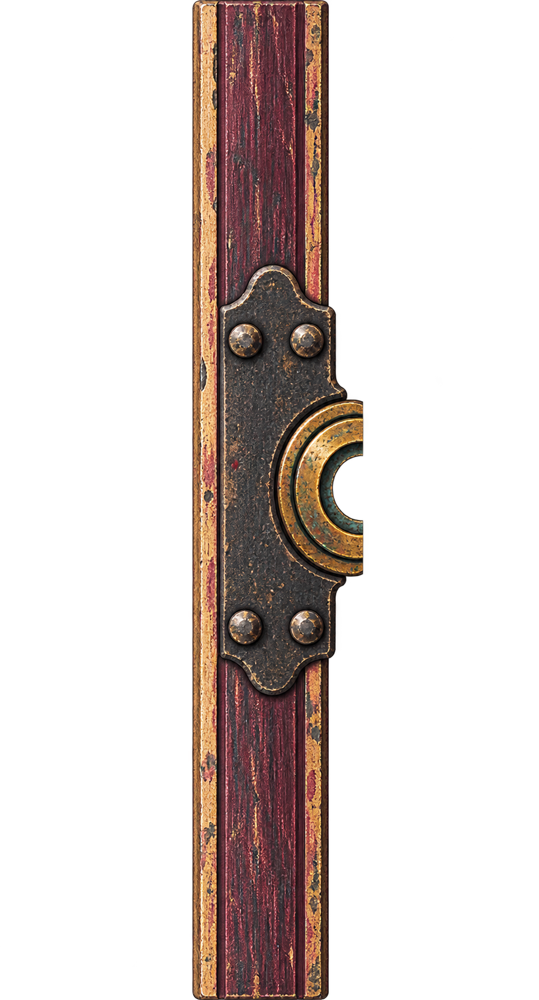Second round: stage machinery, footlights and the HUDCrank bearing in the wingwave-crank-bearing140 × 260 · right edge (axle at the middle of the right edge)Game copy · Original
Second round: stage machinery, footlights and the HUDFootlight hoodfootlight120 × 60 · bottom centreGame copy · Original
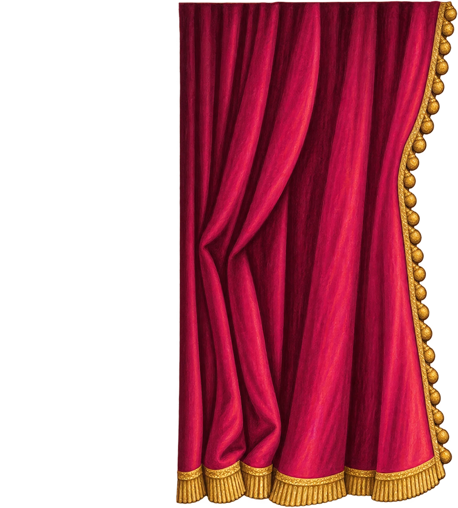Second round: stage machinery, footlights and the HUDTravelling curtain, left panelcurtain-panel1300 × 1440 · top edge (leading edge at the right)Game copy · Original
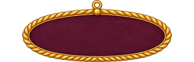Second round: stage machinery, footlights and the HUDWeathervane plaquevane-plaque280 × 90 · centreGame copy · Original
Second round: stage machinery, footlights and the HUDWeathervane arrowvane-arrow230 × 50 · centre (pivot)Game copy · Original
Second round: stage machinery, footlights and the HUDWeathervane arrow, spinningvane-arrow-warn230 × 50 · centre (pivot)Game copy · Original
Second round: stage machinery, footlights and the HUDStorm cloud flatcloud-storm400 × 180 · bottom centreGame copy · Original
Second round: stage machinery, footlights and the HUDHUD plaque (stretchable)hud-plaque800 × 80 · centreGame copy · Original
Second round: stage machinery, footlights and the HUDLife lantern, lithud-lantern-lit48 × 64 · centreGame copy · Original
Second round: stage machinery, footlights and the HUDLife lantern, outhud-lantern-out48 × 64 · centreGame copy · Original
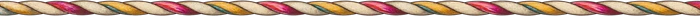Second round: stage machinery, footlights and the HUDVoyage ribbon ropehud-voyage-rope700 × 16 · centreGame copy · Original
Second round: stage machinery, footlights and the HUDVoyage marker shiphud-voyage-ship60 × 50 · bottom centreGame copy · Original
Second round: stage machinery, footlights and the HUDVoyage end flaghud-voyage-flag36 × 56 · bottom centreGame copy · Original
Second round: stage machinery, footlights and the HUDAir iconhud-air-bubble40 × 40 · centreGame copy · Original
Second round: stage machinery, footlights and the HUDAir gauge tubehud-air-tube160 × 32 · centreGame copy · Original
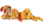Second round: stage machinery, footlights and the HUDSleepers-woken iconhud-sleeper48 × 32 · centreGame copy · Original
Second round: stage machinery, footlights and the HUDTea-leaf omen tokenomen-token80 × 80 · centreGame copy · Original
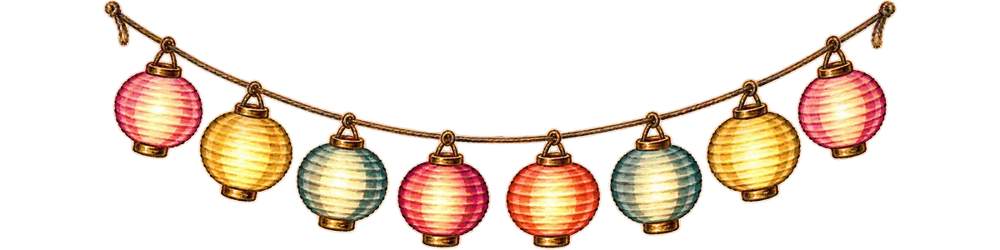Second round: Acts I and IIString of paper lanterns, litlantern-string-lit1200 × 300 · top edge (hangs from the ends)Game copy · Original
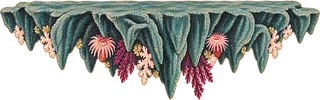Second round: Acts I and IIGrotto rock ledgegrotto-ledge320 × 100 · top edge (walkable)Game copy · Original
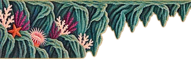Second round: Acts I and IIGrotto ledge growing from the wallgrotto-ledge-wall320 × 100 · top edge (walkable)Game copy · Original
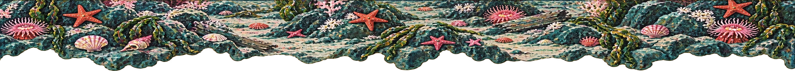Second round: Acts I and IIWreck-site sea-floor shelfgrotto-shelf2000 × 180 · top edge (walkable)Game copy · Original
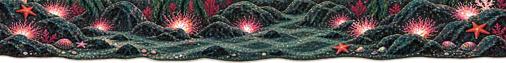Second round: Acts I and IIGrotto cave floorgrotto-floor2080 × 260 · top edge (walkable)Game copy · Original
Second round: Acts I and IIDeep-sea panorama (scrolling)deep-panorama2560 × 1440 · full frameGame copy · Original
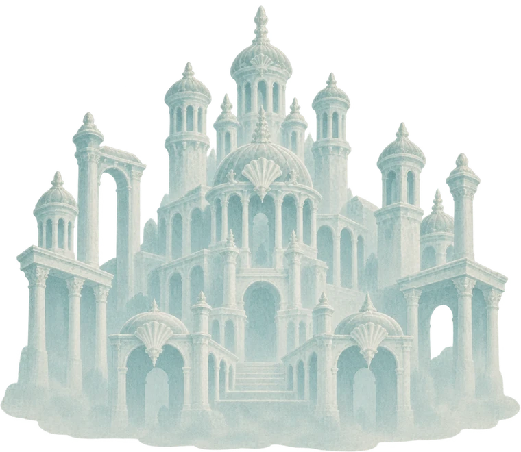Second round: Acts I and IIThe Sea King's palace, distantpalace-distant760 × 660 · bottom centreGame copy · Original
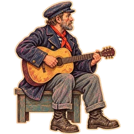Second round: Acts I and IISailor seated with the guitarsailor-seated220 × 220 · bottom centreGame copy · Original
Second round: Acts III and IVGroove slider shoegroove-slider56 × 28 · bottom centreGame copy · Original
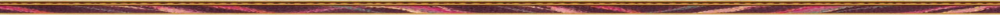Second round: Acts III and IVCourt floor front fasciacourt-floor-edge2560 × 40 · top edgeGame copy · Original
Second round: Acts III and IVBone shelf on a ribrib-ledge360 × 70 · top edge (walkable)Game copy · Original
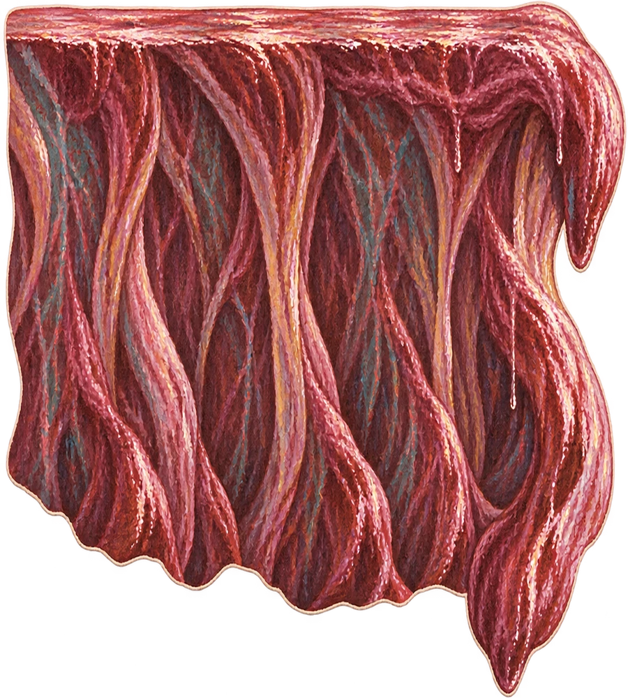Second round: Acts III and IVStomach-wall bankbelly-bank900 × 1000 · top edge (walkable)Game copy · Original
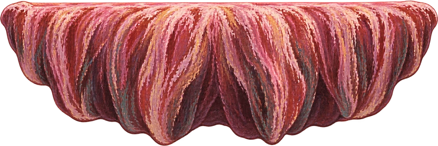Second round: Acts III and IVLower lip of the throatthroat-lip900 × 300 · top edge (walkable)Game copy · Original
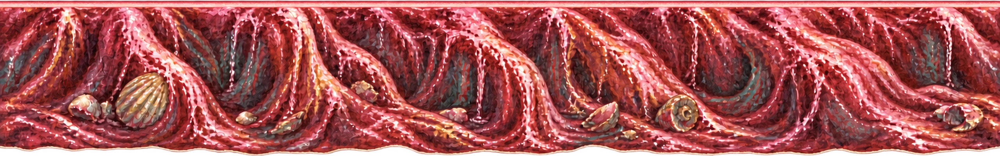Second round: Acts III and IVStomach floor ground rowbelly-floor2560 × 400 · top edge (walkable)Game copy · Original
Second round: Acts III and IVStomach water body (tiling)belly-water-body1024 × 1024 · full frameGame copy · Original
Second round: Acts III and IVSwinging fish-hook with floatfish-hook80 × 220 · top centre (line attachment)Game copy · Original
Second round: Acts III and IVLantern chain (tiling)chain-strip24 × 400 · top centreGame copy · Original
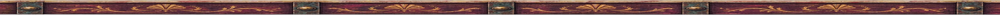Second round: Acts III and IVRocking set platform edgeset-platform-edge2560 × 40 · top edgeGame copy · Original
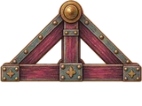Second round: Acts III and IVCradle fulcrumcradle-fulcrum160 × 120 · bottom centre (pivot at the top centre)Game copy · Original
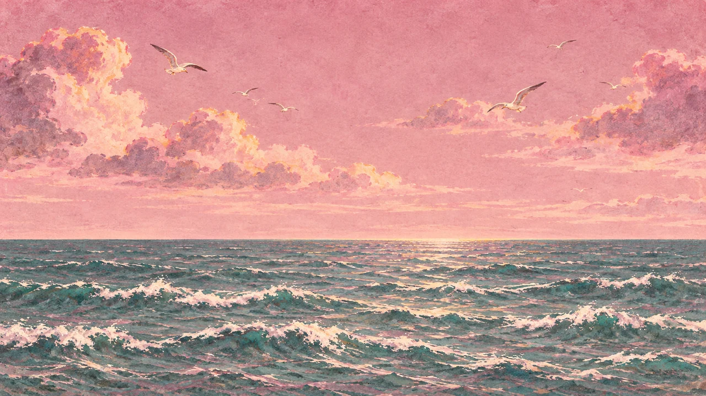Second round: Acts III and IVDaylight sea and skyshore-backcloth2560 × 1440 · full frameGame copy · Original
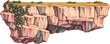Second round: Act VCliff handholdcliff-hold110 × 44 · top edge (walkable)Game copy · Original
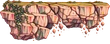Second round: Act VCrumbling handholdcliff-hold-crumble110 × 44 · top edge (walkable)Game copy · Original
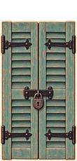Second round: Act VLocked shuttershutter-shut110 × 230 · bottom centreGame copy · Original
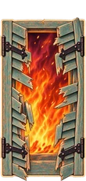Second round: Act VSmashed shuttershutter-smashed110 × 230 · bottom centreGame copy · Original
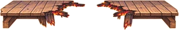Second round: Act VBurnt-through floorfloor-hole300 × 90 · top edge (floor line)Game copy · Original
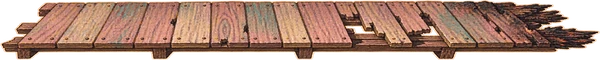Second round: Act VFallen floor sectionfloor-slope600 × 60 · left end (pivot)Game copy · Original
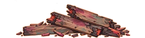Second round: Act VFallen planksrubble-planks300 × 80 · bottom centreGame copy · Original
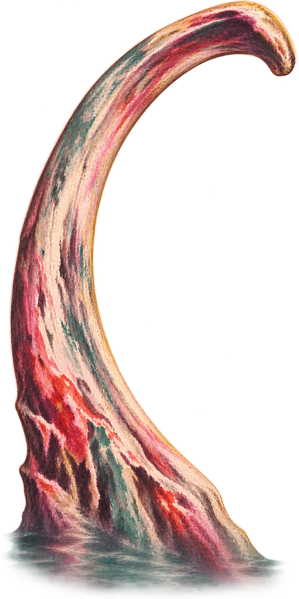Second round: re-requestsRib arch, rooted in the waterrib-arch-tall900 × 1800 · bottom centreGame copy · Original
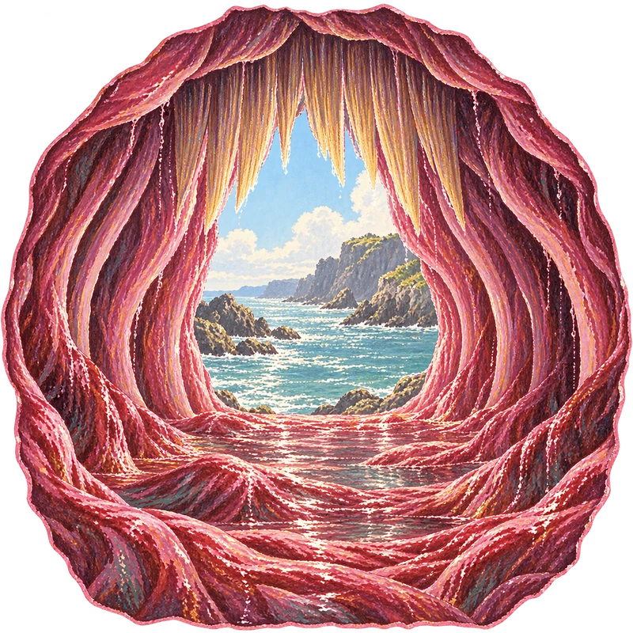Second round: re-requestsThroat opening seen from insidewhale-throat-inside800 × 800 · centreGame copy · Original
Second round: re-requestsTall cliff facecliff-face-tall1400 × 3600 · bottom centreGame copy · Original
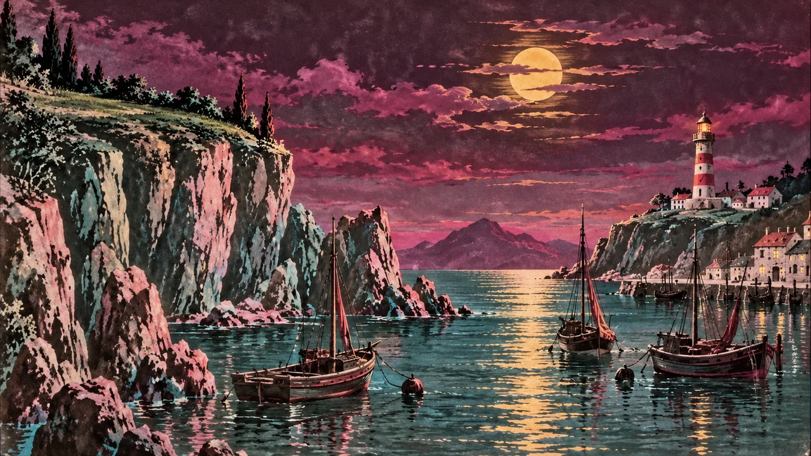Second round: re-requestsWidow's Bay at night, cliff top emptybay-backcloth-empty2560 × 1440 · full frameGame copy · Original
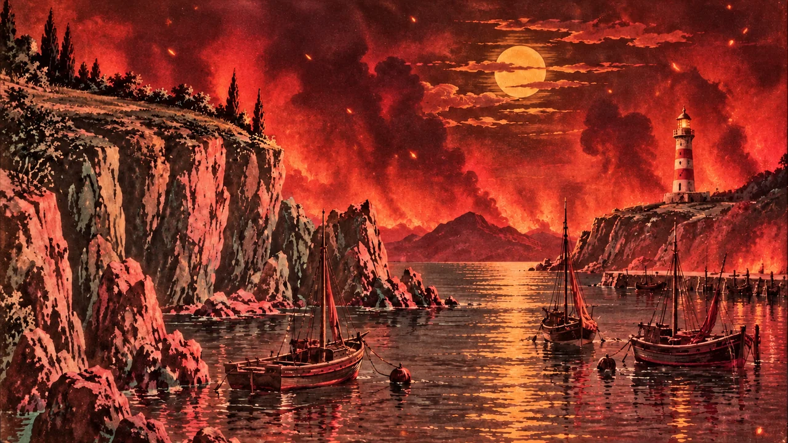Second round: re-requestsWidow's Bay burning, cliff top emptybay-backcloth-fire-empty2560 × 1440 · full frameGame copy · Original
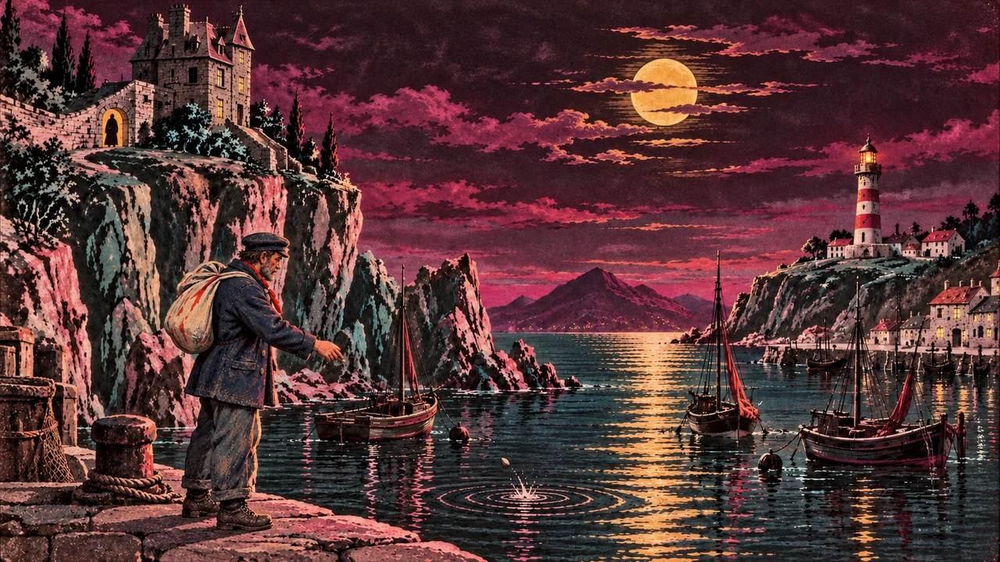Second round: re-requestsEnding: the window is dark (with the doorway)ending-dark-22560 × 1440 · full frameGame copy · Original